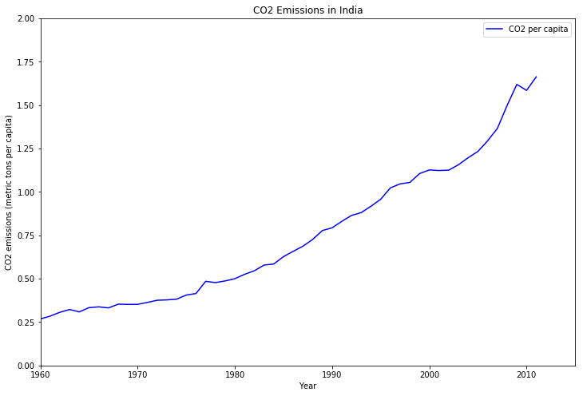
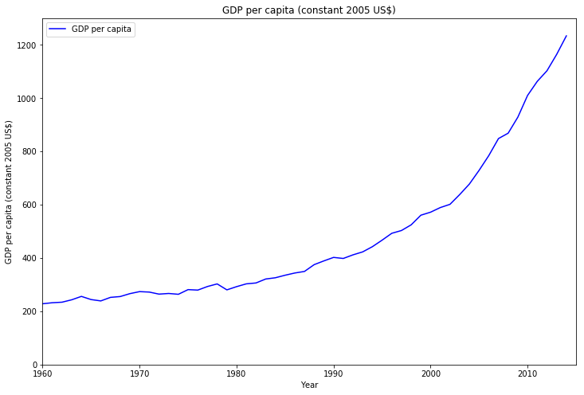
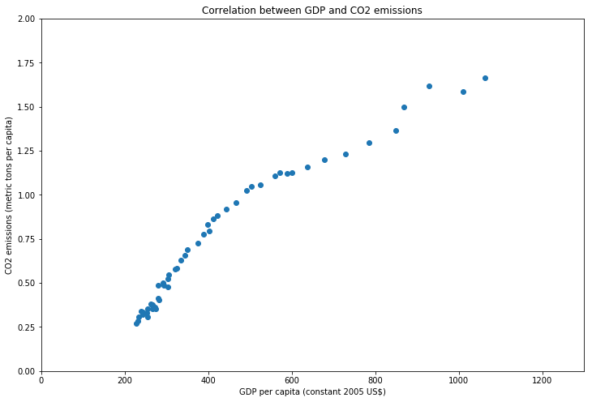
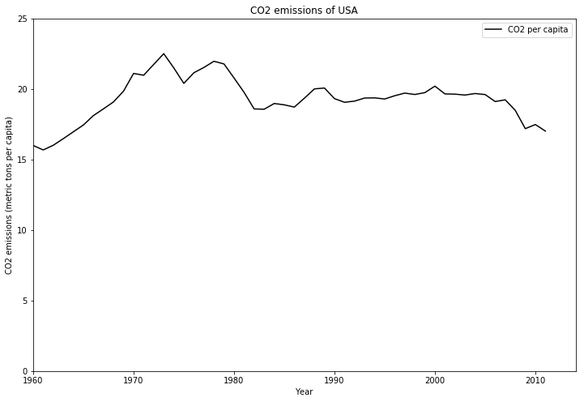
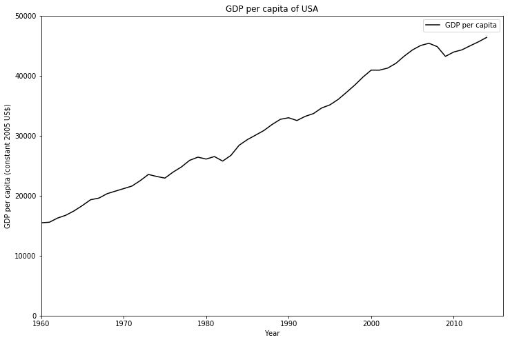
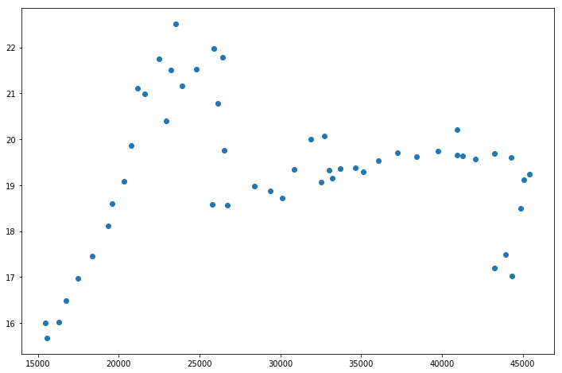
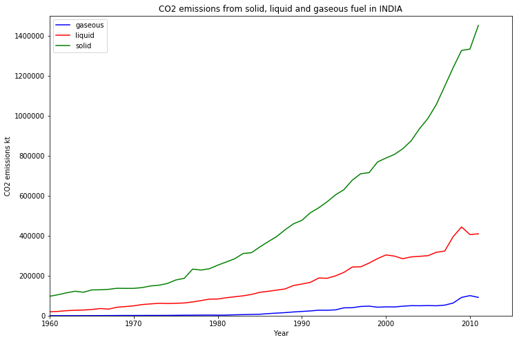
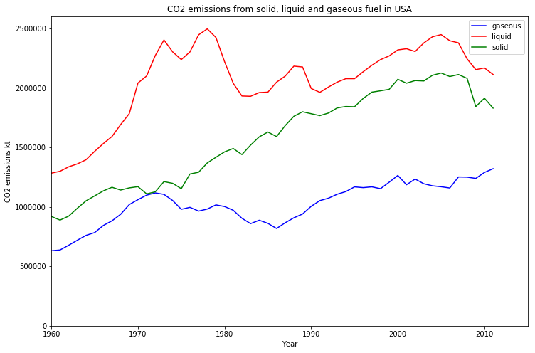
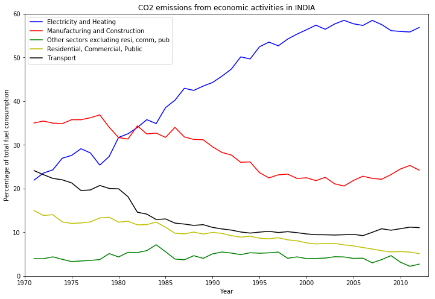
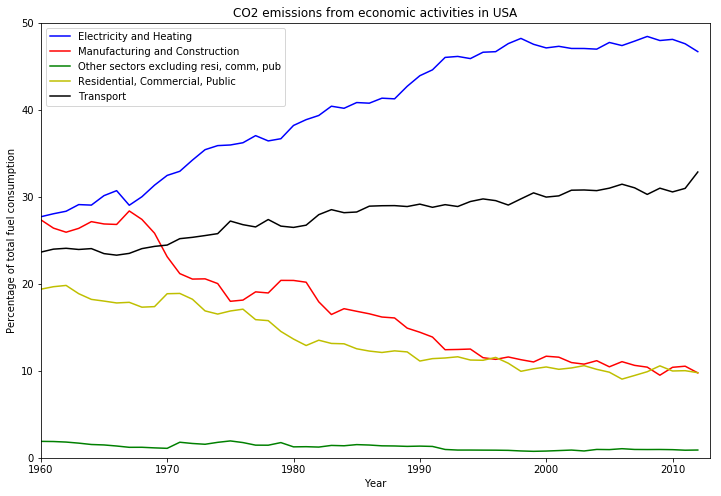

Disclaimer and Introduction
I am by no means an expert in Data Science. I am just starting to explore the vast field of data science because of a lot of other cool things that I like reading about rely heavily on Data Analystics.
I was kind of stupid to ignore the field of data science because somehow I believed that the data in data science comes from humans using applications that do not respect our privacy and the analytics in data analytics is only used to train recommendation algorithms which we call Artificial Intelligence.
I was stupid, I admit it. Turns out AI and recommendation algorithms are just a small subset of Data Science. Here is a list of vast fields within Computer Science that rely heavily on data science.
- Computational modeling (computerized drug simulations, weather forecasting, computational fluid dynamics etc)
- Astrophysics (radio telescopes, etc)
- High-energy physics (cool stuff at CERN et. al.)
- Medical Imaging (fMRI, MRI etc)
All of these activities generate some amount of data and later this data is processed by computers to create all sorts of cool results like false color images (yeah... the images of the Galaxy that we see are false color images), graphs etc etc.
With all this in mind I started a course on edX. It is called the Python for Data Science. It is brilliant and if you are into Data Science then I suggest that you should take this course.
So let's talk about this thingy..
As a part of this course we have to do a small project using a data-set that we have used in the course itself. Since I am very much interested in the environment and the preservation of the environment I decided to use the World Development Indicators data-set released by the World Bank and I started to explore the CO2 emissions of India.
The data-set included all sorts of fun data including data on what percentage of the CO2 emissions came form which type of economic activities (like electricity and heating, manufacturing, transportation etc)
Exploring the data of India was not too much fun especially since I do not have any background in this field. So, I did a comparative study between the CO2 trends in India and the USA and the results are really very shocking (maybe I was expecting something else :-P)
Results
Correlation between CO2 per capita and GDP per capita for INDIA
Here is the graph that shows the CO2 emissions per capita from 1960 to 2011.

Next, let us see the GDP from 1960 to 2014.

Now we will use a scatter plot to look at the correlation.

We have calculated a correlation value of 0.967 using the the numpy.corrcoef method. This method returns the Pearson correlation coefficient.
Correlation between CO2 per Capita and GDP per capita for USA
Here is the graph that shows the CO2 emissions per capita from 1960 to 2011.

Next, let us see the GDP from 1960 to 2014.

Now we will use a scatter plot to look at the correlation.

We have calculated a correlation value of 0.067 which is almost negligible.
NOTE: Can we take a moment here and just marvel at the staggering difference in the Y-axis vales for the CO2 emissions per capita and the GDP per capita vales for India and USA.
For India the range of the Y-axis of the CO2 emissions is 0-2.0 metric tons per capita while the same range is 0-25 metric tons per capita or the USA.
Similarly the range of the Y-axis of GDP per capita is 0-1200 US for India while the same range is 0-50000 US$ for the USA.
CO2 emissions by fuel types in India and USA

In this we can see that most of CO2 emissions in India are due to solid fuels.

In USA the major source of CO2 emission is from the combustion of liquid forms of fuel.CO2 emissions by economic activities
Now in this graph we show the different sets of economic activities that are responsible for CO2 emissions.

As we can see that the major contributor of CO2 emissions in India is the production of Electricity and Heating, followed by the Manufacturing and Construction related activities.
Now, let us look at the graph for the USA.

These two graphs are more or less similar in nature with one major difference. In the USA the Transportation sector is th second largest contributor to CO2 emissions unlike in India where the Manufacturing and construction sector is the second largest contributor.
Conclusion
I just think that this was very fun. I used Python for all the work (Python is really amazing!! :-))
All the code is available as a Kaggle Kernel.
This is my first kernel. I will keep writing more cool kernels.
The data-set was also obtained from Kaggle and it is the World development Indicators by the World Bank.
Its a HUGE data-set and I have not even managed to explore even 1% of it. A LOT of domain knowledge is needed to do some actual data science. :-P
Anyway, this was my Hello-World and I am happy!! :-)
p.s. Check out my Kaggle profile